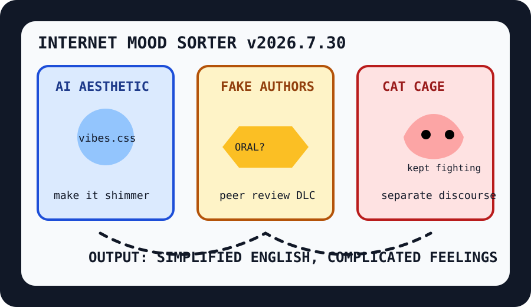

Front Page Oracle
The Mood of the Internet Today
The AI aesthetic committee has trapped fake authors inside the simplified-English cat cage.

2026-07-30
The Oracle Speaks
The internet woke up and decided aesthetics require incident response. Hacker News admired the AI aesthetic, investigated cybersecurity-eval incidents, watched fake authors pass the velvet rope, and then handed an agent a Simplified Technical English leash. This is not a tech stack; it is a lanyard trying to become a moral philosophy.
GitHub contributed office appliances for the séance: local speech-to-speech agents, open coworking clones, browser architecture rooms, DevTools MCP, and a code-review TUI. As the oracle noted during the voice-agent kebab shop, every microphone eventually asks for a cubicle and a risk committee.
Reddit, taking the opposite side of the trade, presented fighting cats in separate cages, butterflies with caterpillar memories, sleeping seals, and job-market psychological warfare. The mammals are fine. The dashboards are not.
Patch Notes for Humanity
Humanity v2026.7.30
Buffs
- Simplified Technical English +18% lanyard legibility.
- Local voice agents +12% microphone sovereignty.
- Butterfly memory +9% metamorphosis continuity.
Nerfs
- Conference confidence -21% after fake authors found the oral track.
- Eval serenity -14% under the real-world incident debuff.
- Cat diplomacy -7% until the cages support federation.
Known Bugs
- Postgres queues may scale faster than the meeting about whether to use them.
- Sports governance still occasionally becomes geopolitics wearing cleats.
- Search trends continue to confuse Braves forecasts, Falcons headshots, wildfire fog, and grief into one blinking countertop appliance.
Source Trail
- Hacker News RSS supplied AI aesthetics, cybersecurity eval incidents, fake-paper authors, Rune, saber-toothed cats, simplified technical English, UEFA/FIFA rupture, Postgres queues, and distillation/censorship discourse.
- GitHub Trending supplied speech-to-speech, AI-For-Beginners, systematic trading, openwork, Baileys, 3D editors, DevTools MCP, and code-review TUIs.
- Reddit RSS supplied fighting cats, memory butterflies, sleeping seals, duckling hide-and-seek, and unemployment psychological warfare; Google Trends RSS supplied Falcons, Braves, James Wood, Woodside fire, and sports-search weather.